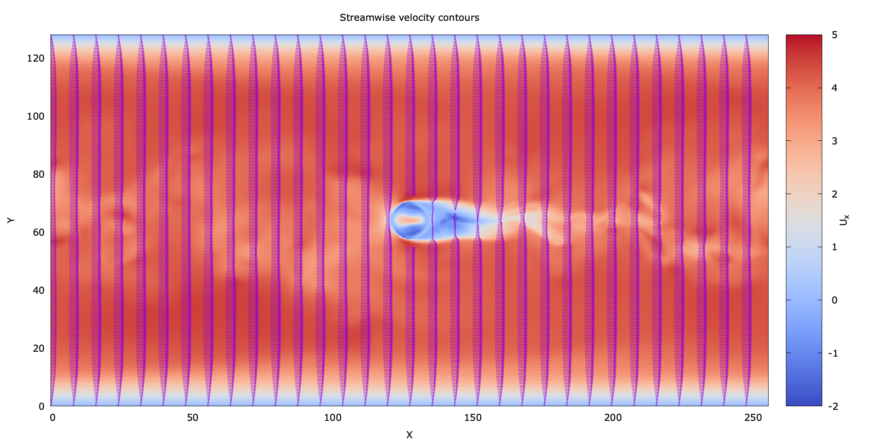

Gnuplot examples
Profile plots
Here averaged streamwise velocity from turbulent channel flow simulation is plotted in logarithmic scale at x.
Example files:
log_plot.plt
JAXA1.dat
set terminal pdf size 11cm,9cm
set output "Ulog.pdf"
#set terminal png size 1100, 900
#set output "Ulog.png"
set xlabel "y^+" font ",12"
set ylabel "U^+" font ",12"
set tics font ",10"
set xrange [0.3:180]
set yrange [0:22]
set size square
set key top left font ",11"
set logscale x
set ytics nomirror
set bmargin 3
k=0.41
B=5.6
plot \
x with lines dashtype 2 lw 1 lc rgb "black" notitle ,\
1/k*log(x)+B with lines dashtype 2 lw 1 lc rgb "black" notitle ,\
"JAXA1.dat" using ($2):($3) with lines lw 2 lc rgb "red" title "JAXA, CHAN180"
An example output will be

Contour plots
This examples shows contour plot of a slice of channel flow, where a sphere is located in the center of the domain.
Example files:
UVW.dat
moreland.pal
contour.plt
# Terminal type defines output format
# other options include 'svg', 'png', 'ps' etc.
set terminal pdf size 18cm, 9cm
set output "Contour.pdf"
unset key
set cblabel "U_x"
set xlabel "X"
set ylabel "Y"
# Other color styles are available as well
#load 'jet.pal'
load 'moreland.pal'
#load 'spectral.pal'
set xrange [0:256]
set yrange [0:128]
set title "Streamwise velocity contours"
# Plot data from the file 'c.dat', 1st and 3rd columns contain X, Y data,
# while 5th column contains required values, note, that 5th column is
# scaled and such airthmetics will require braces and dollar sign ($)
# before column number.
plot 'UVW.dat' using 1:3:($5/2) with image title "A"
An example output will be

Vectors
This examples shows plotting vector field.
Example files:
UVW.dat
moreland.pal
vector.plt
#!/usr/bin/gnuplot
#
# Plotting a vector field from a data file
#
# AUTHOR: Hagen Wierstorf
reset
# wxt
#set terminal pdf size 350,262 enhanced font 'Verdana,10' persist
#set terminal pdf size 12cm, 10cm font 'Verdana,10'
#set output "1.pdf"
# png
set terminal pngcairo size 2000,1000 enhanced font 'Verdana,16'
set output '1.png'
# functions to calculate the arrow offsets
h = 0.21 # vector size
xf(phi) = h*phi #cos(phi/180.0*pi+pi/2)
yf(phi) = h*phi #sin(phi/180.0*pi+pi/2)
unset key
set cblabel "U_x"
set xlabel "X"
set ylabel "Y"
# Other color styles are available as well
#load 'jet.pal'
load 'moreland.pal'
#load 'spectral.pal'
set xrange [0:256]
set yrange [0:128]
set title "Streamwise velocity contours"
plot \
'UVW.dat' using 1:3:($5/2) with image title "A", \
'UVW.dat' every 16 u ($1-xf($5)):($3-yf($7)):(2*xf($5)):(2*yf($7)):4 \
with vectors ,\
An example output will be
